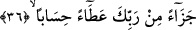

36. Bunlar Rabbinin yeterli bir bağışı, mükâfatıdır.
Âyetteki “cezâen” kelimesi, mânâyı pekiştiren bir masdar olup, yukarda geçen
“şüphesiz takvâ sahipleri için kurtuluşa erme vardır” âyetinin mânâsı ile mansubtur.
Çünkü o âyet, “Allah takvâ sahiplerine rablerinden gelen büyük bir mükâfat olarak
kurtuluş ile karşılık vermiştir” ifâdesinin gücündedir. “Cezâen” kelimesinin sonundaki
tenvin ta’zim ifâde etmektedir. Bundan dolayı biz onu “cezâen azîmen/büyük bir
mükâfât” şeklinde tefsir ettik.
Âyetteki “atâen” kelimesi Allah Teâlâ’dan gelen bir ihsan ve bir ikram anlamındadır.
Kelimeyi böyle tefsir etmemiz; ehl-i sünnete göre- Allah Teâlâ için kullarına sevap
vermenin vacip olmamasından dolayıdır. Allah Teâlâ’nın bir şeyi mükâfât ve bağış
olarak vermesinin mânâsı açık değildir. Çünkü o şeyin mükâfât olması, buna lâyık
olmanın sâbit olmasını gerektirir. O şeyin bir bağış olması ise buna lâyık olmamayı
gerektirir. Şu halde âyette bir yandan mükâfât, bir yandan bağış kelimesinin
kullanılması, birbirine zıt iki kavramın yanyana getirilmiş olması anlamını taşımaktadır.
Fakat bu “hak ediş”, kulun itâatının Allah üzerine sevap vermeyi vacip hale
getirmesinden değil Allah’ın va’di gereğidir. Şu halde sevap, Allah Teâlâ’nın va’di
açısından itâatın karşılığı olarak bir mükâfât olmaktadır. Öte yandan Allah Teâlâ’ya hiç
bir kimseye, hiç bir şeyi vermenin vacip olmaması açısından da müttakilere verilen bu
şey bir bağış ve ihsan olmaktadır. İşte bu izah, yukarda 26. âyetteki “uygun bir karşılık
olarak” ifâdesinin tam karşılığı olmaktadır. Müminlerin elde ettikleri mükâfât kat kat
olduğu için Allah’ın ihsanı kabilindendir. Kâfirlerin karşılaştıkları cezâ ise Allah
Teâlâ’nın adaleti kabilindendir.
Bağış ve ihsan anlamına gelen “atâen” kelimesi karşılık anlamına gelen “cezâen”
kelimesinden bedeldir. Çünkü a’tâ ve cezâ kelimeleri, kavram itibariyle birbirinden
farklı olsalar da yapıları itibariyle birdirler. Atâ kelimesinin cezâ kelimesinden bedel
yapılmasında çok hoş bir nükte vardır. O da şudur: Allah Teâlâ’nın müttakîlere verecek
olduğu şeyin bir bağış, bir ihsan olmasının beyanı burada asıl hedeflenen husustur.
Bunun yapılan amellerin karşılığı olduğunun beyanı ise birinci anlama bir vesile ve araç
mâhiyetindedir. Çünkü kurala göre “bedel”, cümle içinde asıl vurgulanmak istenen ve
kasdedilen ifâdedir.
“Hisâben” kelimesi “yeterli” anlamında olmak üzere “bağış” kelimesinin sıfatıdır.
Kelime yapı itibariyle masdar olup vasıf yerinde kullanılmıştır. Bâzı âlimlere göre ise
“hisaben” kelimesine “amellerine uygun olarak” şeklinde anlamı vermiştir. Bir başka
ifâdeyle âyetin mânâsı şöyledir: “Bunlar, Rablerinin her amele vaad ettiği üzere birden
yediyüze kadar ve hesapsız bir biçimde amellerine uygun bir bağışı ve mükâfâtıdır.”
Allah Teâlâ’nın kat kat ecir vereceği yolundaki vaadi, o mikdarın içine yâni hesaba
dâhildir. Çünkü “hasb” kelimesi “mikdâr” anlamınadır. Bu son takdire göre ifâde
“a’taen bi hisâbin” şeklindedir. Daha sonra hisâb kelimesinin başındaki harf-i cerr